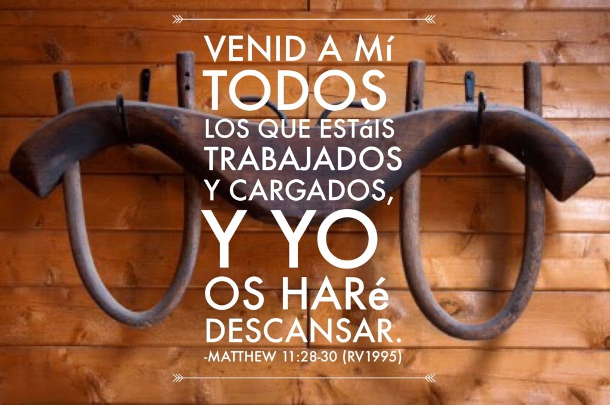

CALENDARIO DE RETIROS
La siguiente tabla resume todas las fechas correspondientes a los retiros del año 2019
| "PARA DIOS NO HAY NADA IMPOSIBLE" |
| DÍAS |
MESES |
|
FEBRERO |
MARZO |
ABRIL |
MAYO |
JUNIO |
JULIO |
AGOSTO |
SEPTIEMBRE |
OCTUBRE |
NOVIEMBRE |
DICIEMBRE |
| DÍA 1 |
Viernes 22 |
Viernes 22 |
Viernes 26 |
Viernes 17 |
Viernes 28 |
Viernes 26 |
Viernes 23 |
Viernes 27 |
Viernes 25 |
Viernes 22 |
Viernes 5 |
| DÍA 2 |
Sábado 23 |
Sábado 23 |
Sábado 27 |
Sábado 18 |
Sábado 29 |
Sábado 27 |
Sábado 24 |
Sábado 28 |
Sábado 26 |
Sábado 23 |
Sábado 6 |
| DÍA 3 |
Domingo 24 |
Domingo 24 |
Domingo 28 |
Domingo 19 |
Domingo 30 |
Domingo 28 |
Domingo 25 |
Domingo 29 |
Domingo 27 |
Domingo 24 |
Domingo 7 |
| Contacto: 07-2818618 - 0995400504 |
JESÚS HACE NUEVAS TODAS LAS COSAS
¿Cuán tristes se habrán sentido aquellos discípulos que caminaban hacia Emaús? Cristo había muerto. Su desánimo y desconcierto debió haber sido grande. Ellos lo conocían, nadie les había contado sobre Él, habían sido amigos cercanos. No solo habían perdido a su maestro, a su amigo, habían perdido su razón de ser. Algunas mujeres decían que había resucitado, que no había nadie en el sepulcro pero, para ellos eso era incomprensible, una locura.
Y así en plena oscuridad, es nuevamente el mismo Jesús el que sale al encuentro, el que siempre da el primer paso. Y no aparece diciendo: –«¡Hey amigos! ¿De qué están tristes? Soy yo, ¡que no ven que no he muerto!»– Por el contrario, Jesús delicadamente aparece como uno más, se hace el desentendido, les pregunta, entiende su dolor, les habla nuevamente sobre todo lo que el maestro les enseñó…acompaña su camino y cuando están preparados les muestra su rostro: Cristo vive.
Pasa que en nuestro caminar por esta vida no pocas veces nos encontramos como esos discípulos de Emaús. Caminamos tristes, con un anhelo profundo en el corazón por la Verdad. Una verdad que tantas veces se nos olvida. Es por eso que una pausa en el camino, dejar que Jesús entre y predisponernos a escucharlo es algo que necesitamos.
Un retiro espiritual es esa pausa que necesitamos en el caminar de nuestras vidas para encontrarnos de una manera más profunda y directa con Dios. Esta es una práctica común en la iglesia que no debemos dejar de lado. Si nunca has ido a alguno o si de pronto crees que no lo necesitas, aquí te dejamos algunos puntos importantes de lo sucede en un retiro espiritual. Anímate a ir a uno.
«Los hombres y las mujeres de hoy necesitan encontrar a Dios y conocerlo “no de oídas”. (…) un buen curso de Ejercicios Espirituales contribuye a renovar en quien participa la adhesión incondicional a Cristo y ayuda a entender que la oración es el medio insustituible de unión al Crucificado» (Papa Francisco).

¿Aún no has ido a un Retiro Espiritual? ¡Observa y difunde este video para que todos puedan ser sanados por el amor de Dios!